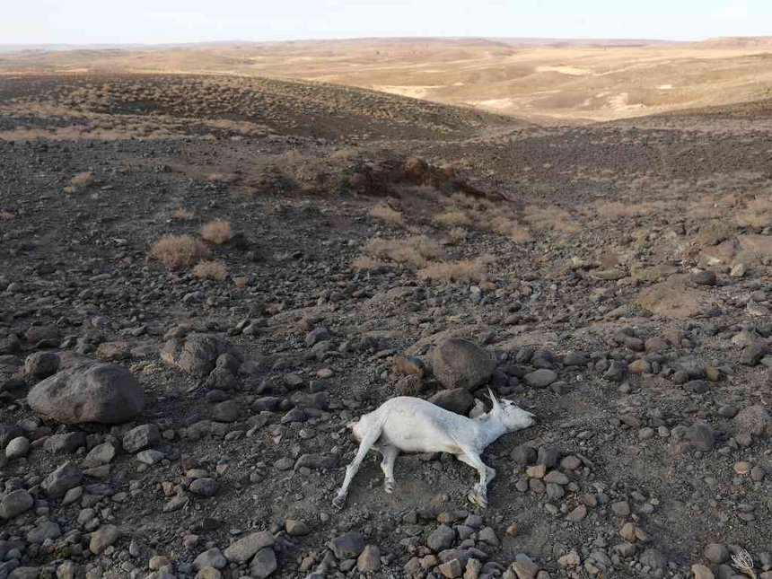
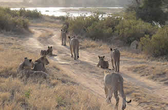

A study done by the Green Africa Foundation in 2015 found that Kenya loses aproximately 5.6Million trees every day. Most rural households depend on firewood as fuel. Urban househoulds in addition to construction depends on charcoal as a source of fuel.
A UNEP study in 2010 discovered that forests contribute upto 3.6% of Kenya's GDP. Apart from logging, forests benefits extends to erosion mitigation, flooding control, water recharge and Biodiversity.
Marsabit and Wajir county to a lesser extent, have a big potential to help Kenya achieve its forest cover goal of 10%, they have vast and untapped land. From our scatter plot they are our univariate-outliers at the lower-right corner.


At face value Isiolo county looks like our model county, it has a fairly sizable land coupled with an equally big forest cover. The forestlands that are mainly occcupied by shrubs and herbs can be harnessed into high quality forests. Isiolo was the county at the top-center of our scatter plot, closest to becoming a bivariate outlier of having big both land and forest cover.
All the lakeside counties i.e Migori, Kisumu and Siaya have the lowest percentage of forest cover. Which is understable considering the overwhelming need in land for human settlement. The region still require forests for soil retention and in floods mitigation, real-estates needs notwithstanding.